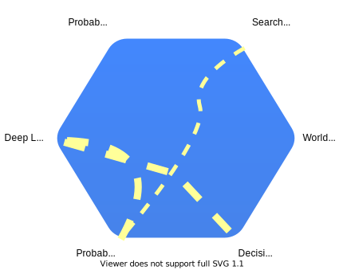
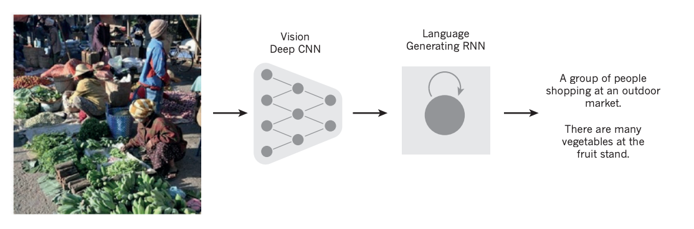
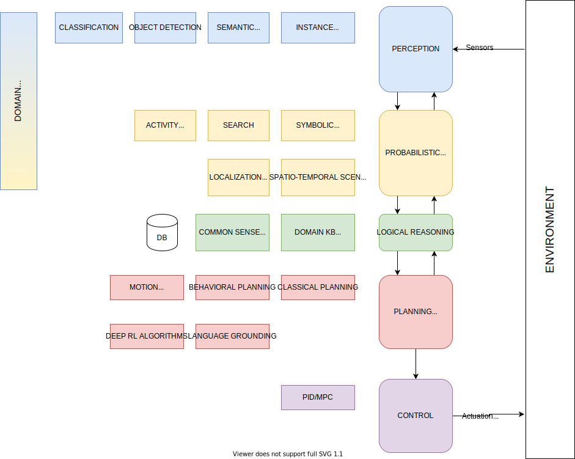
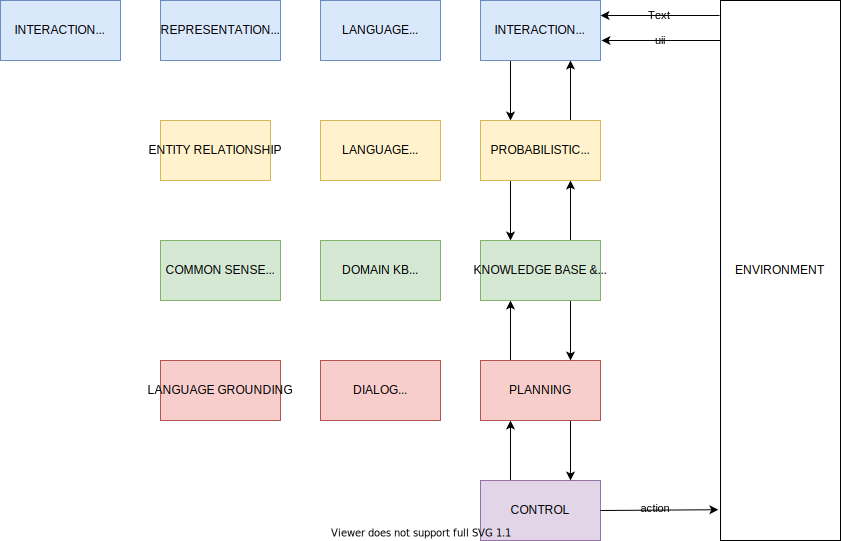

A systems approach to AI
Contents
A systems approach to AI¶
Morphic Architectures¶
As its evident from all existing approaches towards AI, multidisciplinary science that aims to create agents that can think and act humanly or rationally. This course starts the new decade filled with the promises of the previous one - AI is not only around the corner and it can take several decades of R&D for it to match human intelligence. Our purpose here is to (a) understand and appreciate the significant progress that certain components of AI have made over the last few years and (b) to be able to synthesize such components into AI systems that can at least solve domain-specific problems. In other words we are not trying to solve the most difficult and general AI problem as we don’t know its solution. We also can’t wait as we would like to participate in the GAI developments to begin with.
A substantial part of AI is machine learning (ML), that nowadays is used to process the visual sensing (computer vision), verbal commands (speech to text) and many other front-end functions using structures known as Deep Neural Networks (DNNs). These functions are usually effective in modeling the reflexive part of human brain. Their performance sometimes hides the enormous efforts by R&D teams to create carefully curated datasets for the task at hand. When supervised datasets are not enough for the design of reflexive agents policies, we need additional tools such as Deep Reinforcement Learning that offer the possibility to learn agent control policies from world models (or even without them) that in many instances means spending considerable time simulating the environment.
AI is a system with the ability to represent the world and abstract concepts at multiple levels. If we are to draw the architecture of such system, it will have the ability to quickly change depending on the domain and task at hand. Just like origami, AI systems will morph into a suitable architecture, facilitated by high speed interconnections between its subsystems. The controller that controls such changes must be topology aware i.e. knowing the functional decomposition of the AI system and what support for representations and abstractions each subsystem can offer. How these can be combined and ultimately used, is something that needs to be learned. To generalize, such morphic control agents must be able to perform across task domains.

AI distributed system comprising from a number of high-speed interconnected subsystems that are loosely coupled and communicate via a universal language. Line thickness indicates stronger coupling / dependencies between subsystems for the task at hand at this moment in time.
In a limited demonstration of such ability, closed worlds such as games, we have agents that can process thousands of pixels and can create abstractions at the symbolic level. Are they able to generalize ? Doubtful. Which brings us to the very interesting thought. For the vast majority of mission critical industries, we may reach in this decade a good enough performance level. The internet didn’t have 1 Gbps at each household even 5 years ago. But the moment we crossed the 1 Mbps level per user, at the hands of innovators, it managed to change the world as we know it despite its many initial performance issues. The internet does not kill, many people will argue but if anyone believes this analogy, todays’ AI architecture, a bunch of service-oriented silos (APIs) offered by major technology firms, resembles the disconnected/siloed PC before the invention of HTTP and the internet era of the 90s. The protocol and controls that will allow such AI systems to communicate and by doing so demonstrate an ability to synthesize a non-trivial version of intelligence is one of the missing links.
AI agent architecture¶
In the previous section we have argued that AI requires systems thinking to attempt to provide solutions to a network of problems. In this section we first review the problem areas that we can attack in this book and that provide the best chance to yield an usable solution over the next few years.
Explainability. The newly created eXplainable AI (XAI) initiative in DARPA was born out of the necessity to go beyond so-called “black box” approaches whose decisions are not acceptable across many mission critical industries. The response to this challenge by the academic and tech community resulted in many interesting possibilities. However, the current approaches are still limited to enabling deep neural networks to explain their decisions and AI requires an expansion into explainable reasoning as explained below.
Logical Reasoning. A dejavu moment is currently witnessed where symbolic reasoning makes a comeback. Deep learning that up to now was limited to creating reflexive representations (e.g. for perception tasks) it is now supplemented with symbolic representations and caters to encode how the world works (world models). What is missing currently is the combination of explainable mechanisms in the attempt by these new architectures to create facts and entailments across time and space. When this is solved, to give an example, a video camera at the airport gate will have no problem resolving an abandoned backpack, and trigger the alarm, from a backpack left next to a family member.
 Active Continual Learning. Reasoning can be used to see with a different light, pure machine learning tasks as well. Although active learning is a hot area at the moment and with many approaches already proposed, we believe it needs to expand from the current focus of improving single-task inductive learning. Learning how to learn is important but learning what to learn is even more so, especially when we envision systems that need to transfer their knowledge on a task to complete other upstream ML tasks. This is an extension to the well known Continual Learning problem.
Active Continual Learning. Reasoning can be used to see with a different light, pure machine learning tasks as well. Although active learning is a hot area at the moment and with many approaches already proposed, we believe it needs to expand from the current focus of improving single-task inductive learning. Learning how to learn is important but learning what to learn is even more so, especially when we envision systems that need to transfer their knowledge on a task to complete other upstream ML tasks. This is an extension to the well known Continual Learning problem.
Universal Robotic Language (URL). There is no doubt that the pandemic will replace the labor arbitrage that has been driving a specific kind of economic growth in the last 20 years, with a robotic labor arbitrage that can financially invalidate offshoring jobs. A key ingredient to this transition is collaborative robotics but currently they are extremely limited in their ability to communicate with workers. They require significant engineering effort and they are incapable to collaborate with other robots of a different vendor. (a) we can ground spoken natural language describing a task to robots (b) we can use natural language to cross robot vendor boundaries something impossible today.
 A very limited example of combining computer vision and language - from here
We can stich now together a reasonably accurate architecture - treat this for the moment as a snapshot of the morphic architecture we described in the previous section.
 Architecture of an AI agent suitable for the visual perceptive environments
Demonstrators of such intelligent agents in the space of robotics are widespread. One such demonstrator shown below is being researched in Bell Labs. The video below is from the Unix 50 competition
 Click to watch on youtube
Click to watch on youtube
Similarly architecture can be envisioned for natural language understanding (NLU) tasks as shown below.
 Architecture of an AI agent suitable for the natural language understanding tasks
Many authors present the positioning of deep learning and AI as an onion-like relationship shown below. Our expanded discussion on the block diagrams above during the lecture justifies such relationship.
 The relationship between AI and ML/Deep Learning
The relationship between AI and ML/Deep Learning